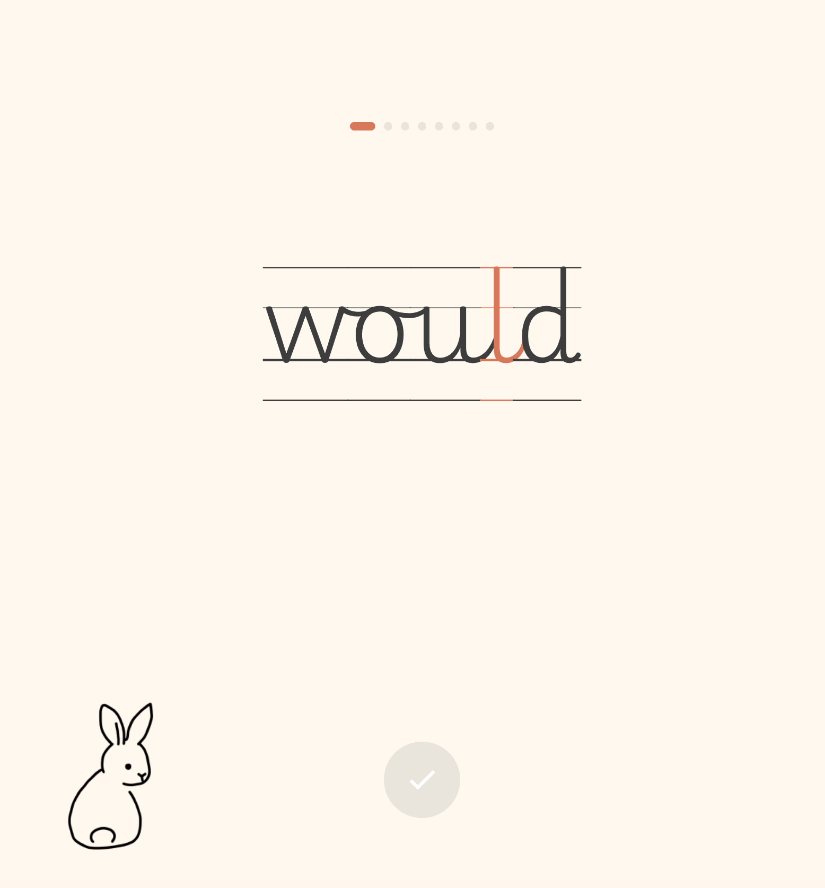
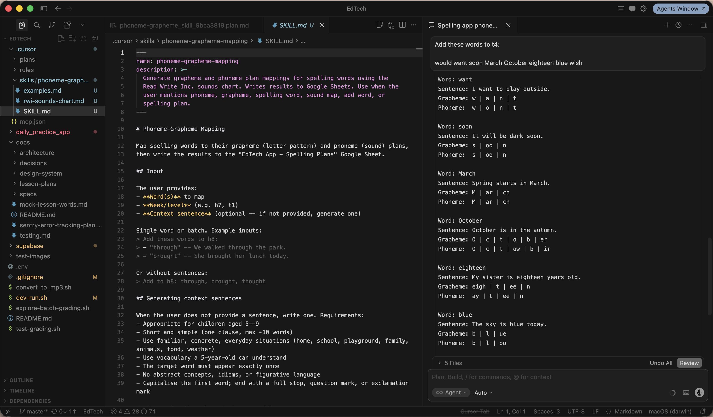

Little Desk started with a Monday morning observation: my daughter was resistant to her weekly spelling homework. So I built her something better — and used it as an excuse to go deep on what it actually means to ship an app with AI.
The learning curve was real and specific. This project meant working in an IDE for the first time, running commands in terminal, managing git branches, and getting comfortable with vibe coding as a working method..
A parent survey I ran at the outset made it clear that the difficulties I experienced with my own child were widely shared. 75% said homework brought conflict at home, 88% already had a tablet — yet only 38% felt reassured by the learning apps they were already using.

The market for children's learning apps is dominated by the Duolingo model: streaks, rewards, loss aversion, progress bars. These mechanics are addictive by design — and for young children, potentially counterproductive.
Three bodies of research informed the design: growth mindset theory, cognitive load theory, and self-determination theory. Together they point in the same direction: less evaluation, less noise, less external pressure. The brief I set myself: an app that is calm not addictive, that treats the child as capable rather than in need of reward, and that keeps pencil to paper — because the act of writing by hand is the point.
I directed Cursor to write the app in Flutter and embedded my UX principles document directly into Cursor as a rules file, so that every code generation aligned with the overriding design rationale. I also encoded the linguistic rules for phoneme mapping as a skill — so adding new words to the curriculum meant Cursor generated the correct grapheme-to-phoneme breakdown automatically, writing it back to both the Google Sheets lesson plan and the Supabase backend that powers the app.
Graphemes are the written units — individual letters or combinations like "sh" or "igh". Phonemes are the sounds they represent. Mapping one to the other is the foundation of phonics-based reading and spelling, and getting it right is what makes the app pedagogically credible rather than just functional.



Testing with a real child on school mornings, surfaces things no process anticipates. Hardware logistics, font choices, the sequencing of a single button. Each sprint produced issues that I could address for the next version.


The app has been in weekly use with my daughter since January 2026. The engagement shift was immediate — "I love doing my spellings now" arrived within 24 hours. From the original survey, I identified six families as candidates for the first beta: parents with high homework friction and screen-time concerns who were already open to learning apps. That phase is now underway — widening the user base and running long enough to find out whether the engagement holds.